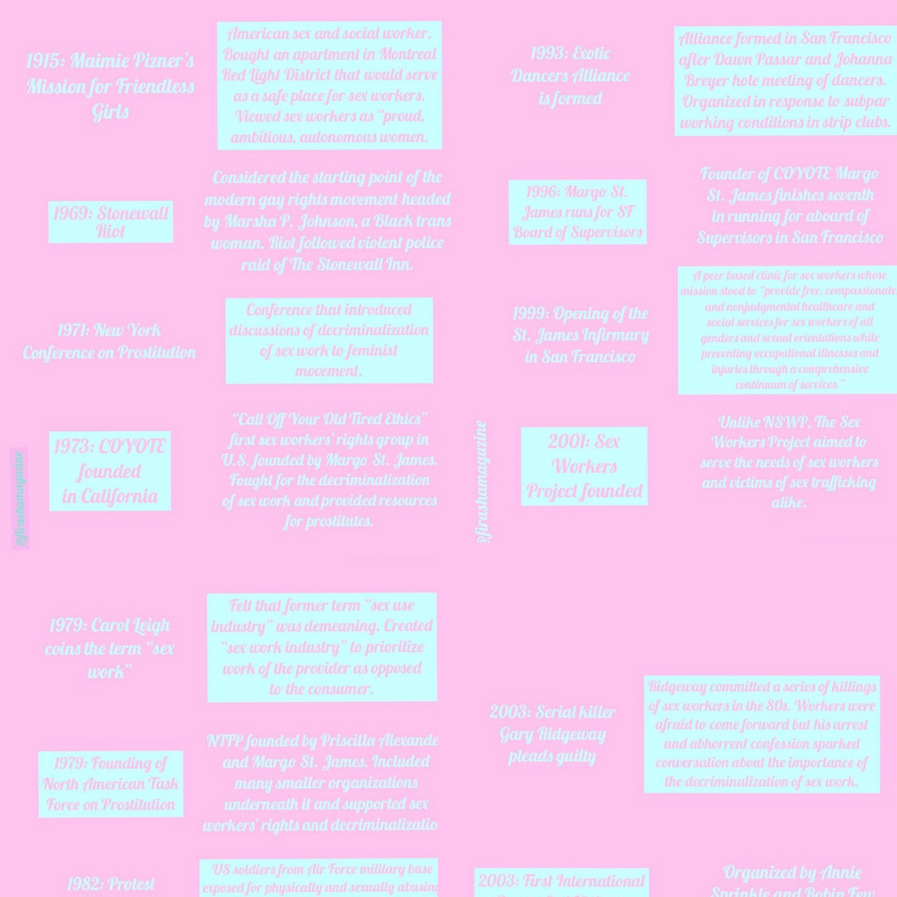

The infographic below can help you understand some of the key distinctions between consensual sex work and illegal sex trafficking.
The following slides detail a brief history of sex work in North America.
*Names have been changed for privacy purposes*
OnlyFans — the site that has recently taken over the online sex industry and become infamous for its “get rich quick” results that both excite and infuriate people around the world.
A website that uses a subscription based model, OnlyFans gives users the option to register as a content creator, consumer, or both. Content creators can set a subscription price for their page and post exclusive content for their subscribers, or “fans.” As the COVID-19 epidemic persists and stay-at-home orders remain in effect, workers and consumers of the sex industry alike are turning to OnlyFans in place of live entertainment.
While many were initially hesitant to use OnlyFans, its popularity and, subsequently its legitimacy, have grown significantly in recent months with 3.5 million new signups in March alone. Beyoncé famously shouts out the site in her verse on Megan Thee Stallion’s “Savage,” and entertainers like Rubi Rose are raking in over $100,000 in subscriptions in hours. Thanks to its growing recognition in the media, OnlyFans now boasts over 24 million registered users, 500,000 of which are content creators, and has distributed more than 563 million dollars between its creators thus far. Sex workers who use the site are seemingly making a generous income by posting private content to their pages and drawing in users who are curious to see what lies beneath the locks that can only be lifted upon subscribing.
People have watched women, men, and nonbinary folk alike draw in hundreds of thousands of dollars from home, prompting many to ask themselves, “should I start an OnlyFans?” It seems like a foolproof way to earn money, but is it really that easy? I spoke with one of the site’s content creators about the side of OnlyFans that you may not know about.
Mimi*, a content creator in the top 5% on OnlyFans, applies purple eyeshadow as she prepares for a shoot. Its been nearly two hours since she started getting ready.
“I always do my hair and makeup before posting,” she says. “I try to put in effort for my fans.” When Mimi is happy with her look, she gets to setting the background — purple LED lights, silk sheets, pillows, and mirrors make for the perfect scene. She snaps a few images that will later be edited and uploaded to her page. Mimi posts to her OnlyFans account almost daily at the request of her 300 subscribers.
“If I don’t post at least once a day, my fans start to complain.”
Angry fans will take to the website’s inbox feature to express their discontent with Mimi if she fails to update her page for the day. While it can be draining to deal with complaints, Mimi understands.
“It’s a lot of work, but this is my job. And those guys pay to see my content. So I get why they’re upset — they’re like my customers, and I have to make sure that the customer is happy so that they’ll resubscribe.”
Mimi relies on her OnlyFans income to pay her rent, so this is a job she takes very seriously. “I feel like everyone thinks this is really easy work, or like, not work at all. But it is, it’s a job just like every other job. I have to commit time to it, I have to look good, and I don’t always feel good. And sometimes it’s so hard just to go and take a picture of myself and upload it because I’m not always having a good day,” she says, “But that’s life, right?”
While it can be stressful to keep up with the demands of fans, Mimi explains that it is also rewarding. At a subscription price of $15 a month and 300 subscribers and counting, Mimi is able to pay her rent off of subscription fees alone. The website also allows users to tip creators or pay additional fees for personalized content, so Mimi lives comfortably off her work. She mentions, however, that she and other content creators could be making even more.
“So the site takes 20% of your earnings for themselves, and that’s a lot. Imagine how many people are using OnlyFans — 20% from all of them? The guy who started this site is rich. And I don’t think he puts much of his earnings towards site maintenance or development either because there are a lot of bugs and weird things that shouldn’t be happening.”
OnlyFans founder Timothy Stokely created the site in 2016, but many users are curious as to what he is doing with the earnings he makes through their content as the site has a number of problems. Mimi explains that her biggest issue with OnlyFans is that it is exclusively a website and there is no app to accompany it.
“I just feel like it’s weird, there’s an app for everything now, but not OnlyFans?” Mimi asks. “Everyone is using this site now, whether they’re posting or subscribing to posts. You’d think with all this money they’re making, they’d use it to make an app. And the site is just glitchy, it constantly crashes and doesn’t save my posts. I just feel like it should be running a lot more smoothly.”
Mimi further explains her issues with the site, stating that it does not implement any measures to protect its content creators. Subscribers can easily steal and leak creators’ exclusive content, defeating the purpose of the subscription model.
“I once found an entire subreddit with the title of my full name, and everything under it was just my content. People sharing it, people asking for more, having full on discussions about their thoughts on my content. It was mortifying. Again, you’d think with all this money they’d have some protective measures to make sure this kind of thing doesn’t happen — because it’s not just me, it’s happened to countless friends of mine and other creators, and it’s not fair to us.”
Just as any other job, there are both upsides and downsides to being an OnlyFans content creator.
“It’s not all fun and games. I’m grateful, don’t get me wrong, but there is a toll that comes with this work — a mental toll. You deal with seeing your private content posted all over the internet, complaints, derogatory comments, and you have to be consistent no matter how you’re feeling.”
While Mimi has some complaints about the site, overall, she is satisfied with her job as it pays her bills and allows her to live a comfortable lifestyle. She advises anyone considering uploading their own content to do their research, and to ask themselves if this kind of work is for them. “It’s definitely rewarding, and a good way to make money, but before you start, ask yourself if you’re in the right headspace to handle this kind of work — the good, the bad, the ugly.”
The following audio message explains a few quick facts about the differences between sex work and exploitation.